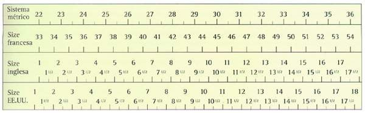

Desde el siglo XVIII, en el ramo del calzado se utiliza una unidad propia: el punto. Así pues, para la determinación de la longitud del pie podía utilizarse el punto París, el punto Berlín, el punto Viena, etc. que los maestros de distintas regiones habían fijado a raíz de distintos acuerdos. En cualquier caso, las numeraciones para determinar la longitud del zapato no tuvieron demasiada importancia hasta finales del siglo XIX, cuando empezó a desarrollarse la producción en masa.
Numeración francesa
Durante la época de Napoleón (principios del siglo XIX), en Europa se extendió el uso del punto París, equivalente a 2/3 cm., es decir 6,667 mm. Puesto que esta medida no tardó en resultar demasiado grande, cada país introdujo medias medidas: el número 40,5 equivale aproximadamente a 27 cm.
Numeración estadounidense
Se trata básicamente de la unidad inglesa size. La diferencia radica en el punto de partida. En el sistema americano, la escala empieza 1,116 mm. antes, lo cual significa que en comparación con el sistema inglés, cada número empieza un poco antes.
Numeración inglesa

El sistema inglés quedó fijado por orden del rey de Inglaterra Eduardo II. Este determinó que tres granos de cebada juntos formaban una pulgada (1 pulgada=2,54 cm) y que 12 pulgadas eran un pie (1 pie=30,48 cm.) La unidad de calzado inglés (size) equivalente a la longitud de un grano de cebada, es decir 1/3 de pulgada o 0,846 cm. También en este caso la unidad resultó ser demasiado grande, por lo que se introdujeron números medios: 1/2 size = 0,423 cm. El sistema de numeración inglés empieza con un longitud para adultos de unos 22 cm. (size 1, equivalente a la 33 francesa). A estos 22 cm. o 8,66 pulgadas se le añada 1/3 de pulgada por número. El número 42 francés se corresponde al número 28 de las tallas métricas y al 8 de la numeración inglesa (22 cm. + (8x0,846) =28,77 cm). La numeración más corriente entre caballeros oscila entre el número 5,5 (número 39 en el sistema francés) y el 11 (número 46 en el sistema francés).
Numeración métrica
La numeración métrica permite medir tanto la longitud del pie como de un zapato y cuenta con una escala similar. En la práctica no se ha impuesto para la numeración del calzado.
Esta tabla muestra las equivalencias de los distintos sistemas de unidades